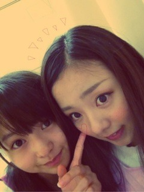

| 2012/07 23 Mon | 184回目*marika |
いつも読んでくださってる方、
初めて読んでくださった方
コメントしてくださった方、
ありがとうございます！

*****HaPPy BirThDAy*****
まひろ♡2012.7.23
真洋とちゃんとおしゃべりしたとき
カフェでだったかな。語ってたなぁ
なんかいろいろ話してくれて、
それを聞いてなぜか私が号泣して...
どんだけ泣くねん！てくらい←
真洋もびっくりしてた笑
そっからかなぁ仲良くなったのは

いっつもにこにこ～てしてて
声もしゃべり方もかわいいのに
歌とダンスになるとカッッッ

てなる‼
これ、本当にすごいと思う。
この切り替え！
もう私が何してほしいんか
わかるらしいで⁇
本当におめでとう‼
だいすきっ

あ、だいぶ前の
「顔晴れ(がんばれ)」
本当にうれしかったで^^
*****
んーとりあえずー...
汗!‼
くあああああ
なんなんだ！
尋常じゃないくらい汗かきました。
いっぱい歌って踊って
疲れたけど気持ちよかったけど
お仕事終わったあとにくるメンバーも
お疲れさんやで

辛いけど、ここで頑張らないとね‼
うん。
*****
昨日の乃木どこキャンプロケ
大変だったけど、
た、たたたたのしかったよー

次、やばいね‼笑
「涙がまだ悲しみだった頃」
すごくいい曲。
ダンス見たとき、鳥肌たった。
みんなすごいまとまってた。
...なんていったらいいのかな、、
うん...負けちゃだめだな。
大好きだからダンスすぐ覚えたよ


愛用してた伊達メガネ
ばきって折れたので新しいの買ってぁ
チープだったなぁ☆
帽子も買った

セカオワさんは特に
スターライトパレードがすきです。
どれもいい曲...
今日長文な気がする

あ、いっつもかぁ‼
今日も読んでくださって
ありがとうございました

乃木ふぁむ不足～
まりか
コメント(142)
2012/07/23 21:48